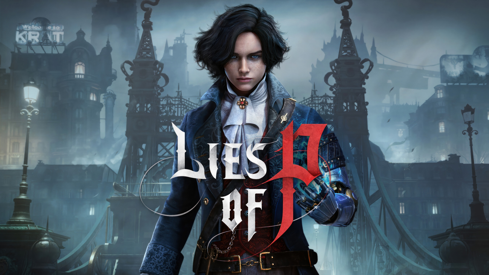

Salah satu game yang saya mainkan pada hari libur ini adalah Lies of P.
Cerita Fantasi kelam yang terinspirasi dari cerita Pinokio yang dibuat oleh Carlo Collodi. dimana kita bermain sebagai boneka yang bernama Carlo dikota post apocalips yang dipenuhi banyak boneka-boneka jahat. Boneka yang ada di dalam game ini lebih terlihat seperti mesin daripada boneka. Perbedaan kita dari boneka lain adalah kita bisa berbohong dimana mekanik ini akan berpengaruh terhadap gameplay kita jika kita sering berbohong maka kita akan lebih dekat menjadi manusia sedangkan jika kita tidak berbohong kita akan lebih dekat menjadi mesin dan bisa mengupgrade tubuh kita dengan senjata-sejata yang lebih kuat.